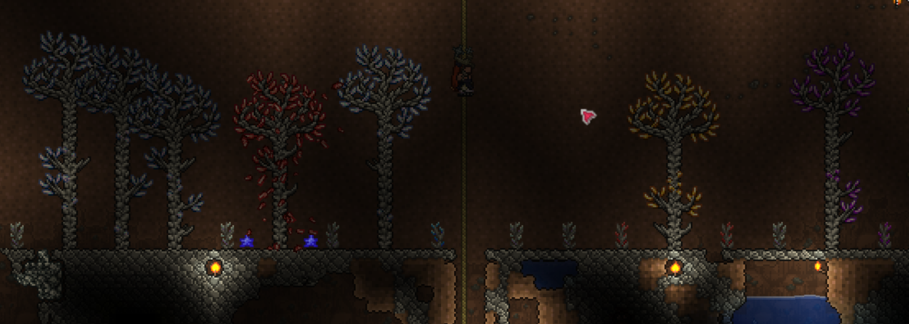
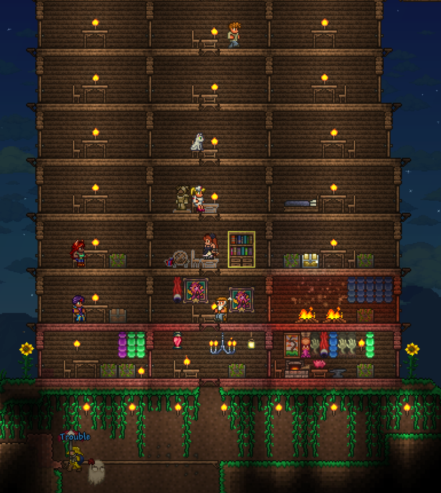
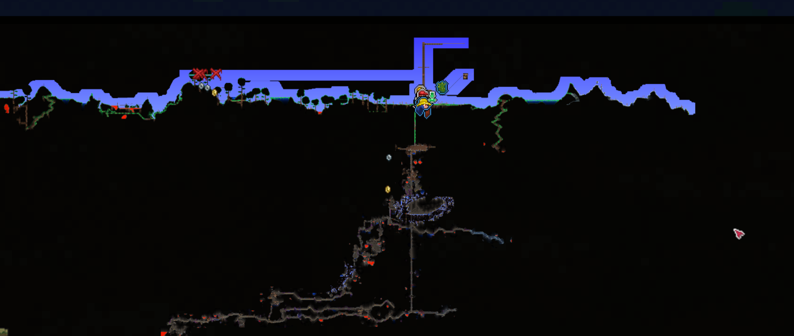
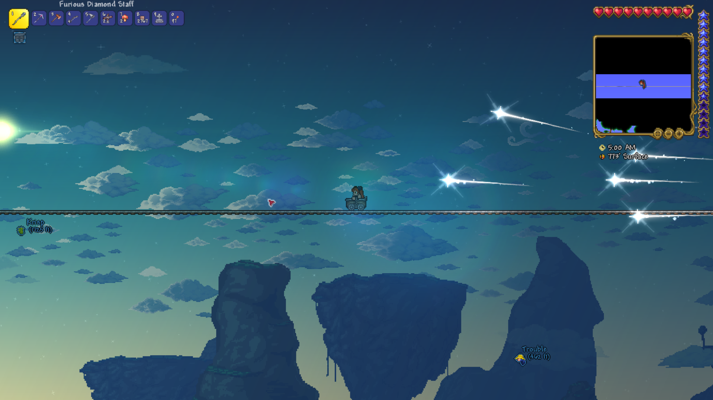

(The music track and backgrounds on all of the Terraria pages are from Terraria. They are not by me.)
Terraria time baybee!!!!
I had so much fucking fun playing this yesterday it's kinda unreal.
At first I wanted to play on a seed mixing Celebration Mk10, For The Worthy, Drunk, and No Traps, but after finding out that Drunk+Celebration makes a world that replaces the water on half of the map with shimmer I decided to just to only For The Worthy and Drunk.
As a result the first day was chaos. Constant, instant death awaited all of us as we scrambled to get housing set up.
After attempting and failing to reach the edge of the map multiple times (David and Emi also tried to do this for a little while), I switched my goal to making a diamond staff and magical robes.
So I spent most of the day making a gem tree farm.




David also captured like 4 garden gnomes which is neat. And Rose built a massive tower to the sky.
They both gave me a lot of their money so I could buy various vanity items which I'm very grateful and appreciative of.
Emi got kinda upset after failing to reach the edge of the map a number of times. I have a gift prepared for her next time she plays, I'm hoping the experience didn't tilt her off of wanting to play with us.
Kristian made a crafting square or something, it's still in progress. I'll try to remember to take a picture of it next time.
The day ended with a slime rain which I forgot to take pictures of because I'm still not used to journaling properly.
We got totally obliterated by the Slime King. Twice. This is gonna be a difficult run.